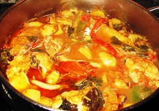

Culianaria Tipica de Roraima
Roraima abriga uma variedade de culturas decorrente da migração de pessoas das regiões Nordeste, Sul, Sudeste e de outros estados da Região Norte, que optaram por Roraima como sua segunda terra, além da culinária indígena local. O tacacá, a maniçoba, o acarajé, o churrasco gaúcho, o vatapá e o queijo mineiro fazendo parte de uma mesma culinária local — junto à culinária indígena original do lugar — são uma pequena amostra do que define a gastronomia roraimense: diversidade.
Guisado de Galinha Caipira
Um tipo de receita muito popular na região. A galinha é cortada em pedaços, guisada em óleo, cebola, alho, pimenta-do-reino, pimenta-de-cheiro, tomate, sal, cheiro verde e colorau. Acompanha pirão feito com o próprio caldo.
Ingredientes
1 frango inteiro
1 tomate grande
1 cebola grande
3 pimenta-de-cheiro
3 colheres (sopa) de extrato de tomate
2 tablete de caldo de frango ou 1 Sazón de frango
1 colher (sopa) de colorau
pimenta-do-reino a gosto
3 dentes de alho
cheiro-verde a gosto (opcional)
Modo de Preparo
Corte o frango em pedaços, tirando toda a pele e gorduras que nele se encontram.
Em seguida, coloque em uma panela água e vinagre e leve ao fogo por 3 minutos.
Refogue alho, tomate, cebola, pimenta-de-cheiro, e depois de 2 minutos, acrescente colorau, pimenta-do-reino.
Na panela com o frango, junte todos os temperos refogados, caldo de frango e extrato de tomate.
Depois de refogar o frango, acrescente um copo de água e deixe cozinhar por 15 minutos.
Depois de todo procedimento, acrescente o cheiro-verde e estará pronto para servir.
Obeservação
Você pode utilizar o cheiro-verde antes dos 15 minutos de cozimento.
Redes Sociais